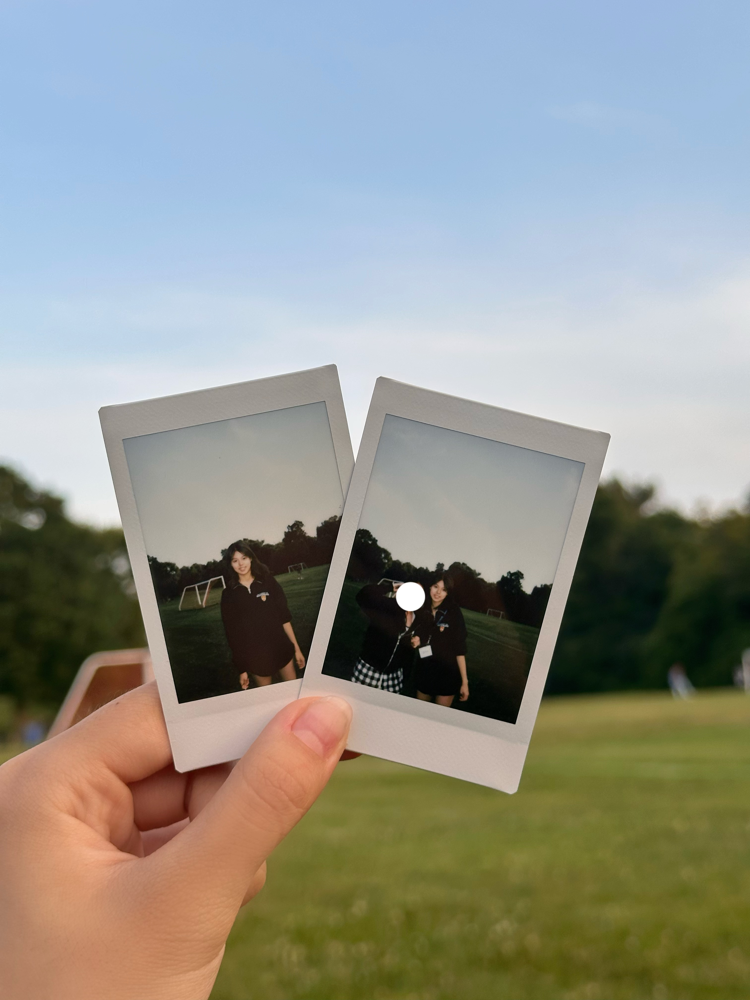

About

I’m Jessie Wang. I design garden layouts, planting schemes and outdoor living spaces.
My background is in Management Engineering at the University of Waterloo. I use sketches, 3D models and planting plans to develop and communicate design ideas.
I’m also learning front-end development by building this portfolio.
ProcreateSketchUpEnscapeAutoCAD
View projects